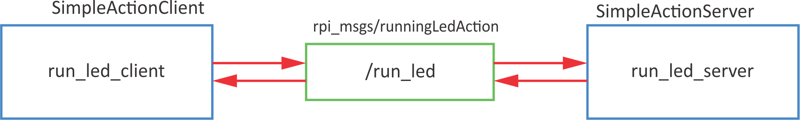

Actions
actionlib library- server/client system
- asynchronous operation
- used for longer lasting functionalities
- you can perform other tasks while basic functionality is called
- action msg is composed of individual messages for Goal, Feedback and Result
How to recognise action?
Use rostopic list and look for the following structure (as stands for action server):
as_name/cancel
as_name/feedback
as_name/goal
as_name/result
as_name/status
(
as_name is action server namespace).
Action MSG
Action msgs can be defined in package rpi_msgs. Create new folder action and inside new file runningLed.action.
roscd rpi_msgs
mkdir action
cd ./action
touch runningLed.action
code runnngLed.action
Copy the following acton msg definition:
| runningLed.action |
|---|
| # goal
int16 numberOfRuns
---
# result
int16 finalRun
---
# feedback
int16 currentRun
|
In CMakeLists.txt of the rpi_msgs package change the following lines:
| CMakeLists.txt |
|---|
| find_package(catkin REQUIRED COMPONENTS
rospy
std_msgs
message_generation
actionlib_msgs
)
|
| CMakeLists.txt |
|---|
| add_action_files(
FILES
runningLed.action
)
|
| CMakeLists.txt |
|---|
| generate_messages(
DEPENDENCIES
std_msgs
actionlib_msgs
)
|
In package.xml of the rpi_msgs package add the following line:
| package.xml |
|---|
| <build_depend>actionlib_msgs</build_depend>
|
Then do catkin_make in catkin_ws folder.
Example
Turn on sequential LEDs n-times.

Action server
Simple action server sytnax:
| sas = actionlib.SimpleActionServer('name', actionSpec, goal_callback, auto_start=False)
sas.start()
def goal_callback()
sas.publish_feedback(_feedback_)
sas.set_succeeded(_result_)
if sas.is_preempt_requested():
sas.set_preempted()
|
Example code for simple action server:
| ledrun_server.py |
|---|
| #!/usr/bin/env python
import rospy
import RPi.GPIO as GPIO
# include actionlib
import actionlib
# include action msgs
from rpi_msgs.msg import runningLedFeedback, runningLedResult, runningLedAction
class runled_server():
def __init__(self):
# init variables
# set GPIO kot BCM
GPIO.setmode(GPIO.BCM)
# set all leds
for ii in range(2,8):
# set IO as outputs
GPIO.setup(ii,GPIO.OUT)
# define simple action server
# actionlib.SimpleActionServer('action_name', actionType, callback, autostart)
self.ACserver = actionlib.SimpleActionServer('run_led', runningLedAction, self.goal_callback, False)
# run server
self.ACserver.start()
print('Server pripravljen')
# define loop frequency (6 Hz)
self.r = rospy.Rate(6)
self.ctrl_c = False
rospy.on_shutdown(self.shutdownhook)
def goal_callback(self, goal):
# Do lots of awesome groundbreaking robot stuff here
self.resetLed()
# print number of iterations
print("Stevilo iteracij: %i" % goal.numberOfRuns)
# define feedback variable
feedback1 = runningLedFeedback()
# define result variable
result1 = runningLedResult()
success = True
doPreemt = False
# do number of iterations
for kk in range(1,goal.numberOfRuns+1):
# turn on individual LED (GPIO 2 - GPIO 7)
for ii in range(2,8):
# check if there was a preemt request
if self.ACserver.is_preempt_requested():
# skip other interations
print('Goal preempted.')
# definie result
result1.finalRun = kk
# in case of preemt send result and text
self.ACserver.set_preempted(result=result1,text='Goal preemted.')
success = False
doPreemt = True
# break inside loop - turning on individual LEDs
break
###############################
# ACTIONS
# clear all LED
self.resetLed()
# turn on LED i
GPIO.output(ii,True)
# 6 Hz
self.r.sleep()
###############################
# in case of preemt, break outside loop - iterations
if doPreemt:
break
# send feedback after each interation
feedback1.currentRun = kk
self.ACserver.publish_feedback(feedback1)
# send result after all iterations
if success:
# define results
result1.finalRun = feedback1.currentRun
# log
rospy.loginfo('Zakljuceno - Succeeded')
# poslji rezultat
self.ACserver.set_succeeded(result1)
def resetLed(self):
# reset all leds
for ii in range(2,8):
# turn off all leds
GPIO.output(ii,False)
def shutdownhook(self):
# works better than the rospy.is_shutdown()
# this code is run at ctrl + c
# clear all settings
GPIO.cleanup()
self.ctrl_c = True
if __name__ == '__main__':
# initialise node
rospy.init_node('runled_server')
# initialise class
runled = runled_server()
# reset leds
runled.resetLed()
try:
# loop
rospy.spin()
except rospy.ROSInterruptException:
pass
|
Action client
Simple action client syntax:
| client = actionlib.SimpleActionClient('name', actionSpec)
client.send_goal(goal) # Sends the goal to the action server.
client.wait_for_result() # Waits for the server to finish performing the action.
client.get_result() # Prints out the result of executing the action
client.get_state() # Get current state of the server
# define action server status
PENDING = 0
ACTIVE = 1
DONE = 2
WARN = 3
ERROR = 4
|
Example code for simple action client:
| ledrun_client.py |
|---|
| #!/usr/bin/env python
import rospy
# import actionlib
import actionlib
# import action msgs
from rpi_msgs.msg import runningLedAction, runningLedGoal, runningLedResult
# define action server status
PENDING = 0
ACTIVE = 1
DONE = 2
WARN = 3
ERROR = 4
class runled_client():
def __init__(self):
# define simple action client
# actionlib.SimpleActionClient('action:name', actionType)
self.client = actionlib.SimpleActionClient('run_led', runningLedAction)
# wait, until server isnt active
self.client.wait_for_server()
rospy.loginfo("Server is active.")
self.ctrl_c = False
rospy.on_shutdown(self.shutdownhook)
def run_led_client(self, goalNum):
# define goal
goal = runningLedGoal()
goal.numberOfRuns = goalNum
# send goal
self.client.send_goal(goal)
'''
###################################
# FOR PREEMT TESTING
# after 3 s send new goal
rospy.sleep(3)
goal.numberOfRuns = 2
self.client.send_goal(goal)
print('New goal was sent.')
###################################
'''
# OPTION A - wait, until server doesn finish (similar to service)
self.client.wait_for_result()
'''
# OPTION B - do something else while you are waiting
## read current server state
current_state = self.client.get_state()
## define loop frequency 1 Hz
r2 = rospy.Rate(1)
# until server status isnt DONE, do something else
while current_state < DONE:
# action is running, so do somethin productive
# check state
current_state = self.client.get_state()
# 1 Hz
r2.sleep()
# is the server state is WARN
if current_state == WARN:
rospy.logwarn("Warning on the action server side.")
# if the server state is ERROR
if current_state == ERROR:
rospy.logerr("Error on the action server side.")
'''
# return result
return self.client.get_result()
def shutdownhook(self):
# works better than the rospy.is_shutdown()
# this code is run at ctrl + c
self.ctrl_c = True
if __name__ == '__main__':
# initialise node
rospy.init_node('run_led_client')
# initialise class
runled = runled_client()
try:
# poslji goal
result = runled.run_led_client(goalNum = 10)
# izpisi rezultat
print("Result: %i" % result.finalRun)
except rospy.ROSInterruptException:
# v primeru napake
print("Program interrupted before completion.")
|
Exercise
Stop execution of LEDs sequential blinking if the object is closer that 20 cm.